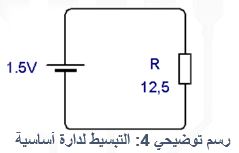

تحليل الشّيء هو بيان أجزائه ووظيفة كل جزء، أو تقسيم الكل إلى أجزاء وعناصر تكوّنه لفهم آلية عمل هذا الكل المُتكامل، أو إعادة بناء مشابه له، أو فهم دور جزء منه، بقصد تبسيط المُعقد وفهمه.
التّحليل قد يكون عملية محسوسة ملموسة كتحليل الماء لعناصره الأساسية باستخدام التّحليل الكهربائيّ، حيث نعمل على تمرير تيّار بوعاء حاوي للماء بتطبيق جهد مرتفع لنُلاحظ بعدها تصاعد فقاعات غازيّة عند القطب الموجب والسّالب كما يظهر بالرّسم رقم (1). يتجمّع غاز الهيدروجين عند السّالب بينما يتجمّع الأوكسجين عند الموجب، ويُلاحظ بأنّ حجم الهيدروجين ضعف حجم الأوكسجين وهذا ما يؤكد تشكل جزيء الماء من ذرّتي هيدروجين وذرّة أوكسجين واحدة. يُجمع غاز الهيدروجين ويخزّن كسائل تحت ضغط عالي ليستخدم فيما بعد كوقود سريع الاشتعال وصديق للبيئة, أو يستعمل بعمليات اللّحام وقطع المعادن بينما يُجمع الأوكسجين ويُخزّن تحت ضغط عالي مع التبريد كسائل أيضاً وله العديد من الاستخدامات الطّبية والصّناعية. عكس التّحليل هو التّركيب كأن نأخذ الغازين المذكورين ونضعهما بوعاء ومن خلال شرارة كهربائيّة تحدث عملية احتراق الهيدروجين الّتي ماهي إلا اتحاده مع الأوكسجين واعادة انتاج الماء مع إطلاق كم من الطّاقة الحرارية، وبأضدادها تعرف الأشياء. لم أورد ما سبق لشرح التّحليل الكهربائيّ، وإنما فقط لتقريب مبدأ التحليل للأذهان، وتذكيرك بواحدة من استخدامات الأثر الكيميائي للتّيّار الكهربائيّ المفيدة.
التّحليل قد يكون عملية عقلية نلجأ لها لتبسيط وحل مشاكلنا الكبيرة كأن نصادف دارة تحتوي مصدر للتّغذية وأحمال ذات توصيل مختلط كالّتي تظهر بالرّسم رقم (2) ولسبب ما أردنا معرفة التّيّار المار بها عند تطبيق الجهد 1.5 فولت مستمر بعد إغلاق المفتاح SW1

سنسارع عندها لاستدعاء وتطبيق قانون أوم لحساب التّيّار كما يلي:I = V / R
لكن مع غياب قيمة المقاومة الكلّية للدّارة R يستحيل الحساب ونضطر لتحليلها لاستخلاص المقاومة الكلّية (المكافئة) للدّارة، أولاً نستبدل المصابيح BL1... BL4 بمقاومات قيمة كل منها 7.5 أوم وهي المقاومة الكهربائيّة لفتيل المصباح لتصبح الدّارة كما بالرّسم رقم (3) الّذي يساعدنا على التّفكير بالمصابيح كعناصر كهربائيّة بدل النّظر لها كمصابيح متوهجة بلون ما، وتمتلك حجم وشكل، وتباع بسعر، وشدّة إضاءة تبلغ كذا وأمور أخرى لا تعنيني عند حساب التّيّار المُستجر من قبلها. ثانياً سنقوم بتحويل المقاومات الأربعة R1, R2, R3, R4 إلى مقاومة واحدة سنسميها R لتصبح الدّارة كما بالرّسم رقم (4) عبارة عن مصدر جهد 1.5 فولت مستمر ومقاومة قيمتها 12.5 أوم يمر فيها تيّار شدّته: I = 1.5 / 12.5 = 0.12A كما يظهر عند حسابه بقانون أوم مع أفتراض ثبات جهد المدّخرة عند الـ 1.5 فولت، وأهمال مقاومة المفتاح SW1، ومقاومة أسلاك التّوصيل الّتي تكون عملياً قريبة من الـ 0 أوم.
التّحليل قادنا لتبسيط الدّارة من مختلطة لأساسية من السّهل حساب شدّة التّيّار المار فيها وبذات السّهولة يمكن حساب الاستطاعة المستهلكة بالدّارة كما يلي: P = I * VP = 0.12 * 1.5P = 0.18W
أو: P = I^2 * RP = 0.12 ^2 * 12.5P = 0.0144 * 12.5P = 0.18W
أو: P = V^2 / RP = 1.5 ^2 / 12.5P = 2.25 / 12.5P = 0.18W
طبعاً الاستطاعة بدارة المصابيح تُصرف أو تُستهلك كطاقة حرارية تعمل على تسخين فتيل المصباح ليتوهج ويصدر ضوء.
تحليل الدّارات يفيدنا بتبسيط الحسابات ومعرفة قيمة وقطبيّة الجهود، وشدّة واتجاه التّيّارات؛ وللقيام به ينبغي امتلاك قوانين ونظريات وطرق كقانون أوم، واختزال أو اختصار الدّارة بايجاد المقاومة المكافئة لجزء أو كل الدّارة وهذا ما سنتعرف عليه بالدّرس القادم بتوصيل المقاومات تسلسلياً وتفرعياً، وهو ما استخدمناه عندما استنتجنا المقاومة المكافئة للمصابيح الأربعة. يضاف للقوانين والنّظريات برامج لرسم ومحاكاة وتحليل الدّارات كـ Circuit Wizard و Proteus و Multisim.
عملياً هل نضطر لتحليل الدّارة أثناء الصّيانة أو التّصميم؟ الجواب: نعم نقوم به بشكل مباشر أو غير مباشر ولمرة واحدة أو مراراً وتكراراً. أثناء التّصميم تتولى عمليتي التّركيب والتّحليل للحصول على أفضل نتيجة وأداء من الدّارة.
ختاماً يرمز للمقاومة الكهربائيّة الثّابتة بالمخططات بأحد الرّمزين التّاليين:
⚡يمكنك تنزيل وعرض الدرس كملف بي دي أف من هنا. ⚡يمكنك المشاركة والتعليق بالنقر هنا. ⚡للحصول على مساعدة ومناقشة موضوع الدرس يمكنك الانضمام لمجموعة #تبسيط_الإلكترونيات على الواتساب من هنا.